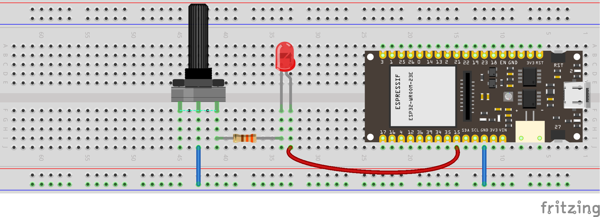
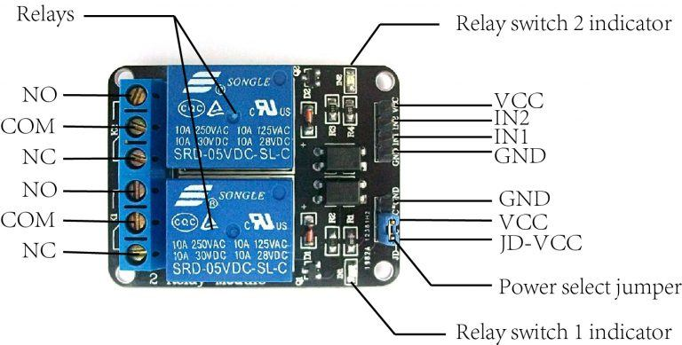
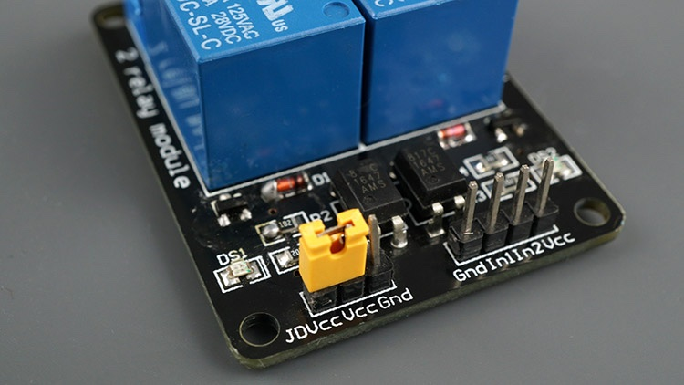
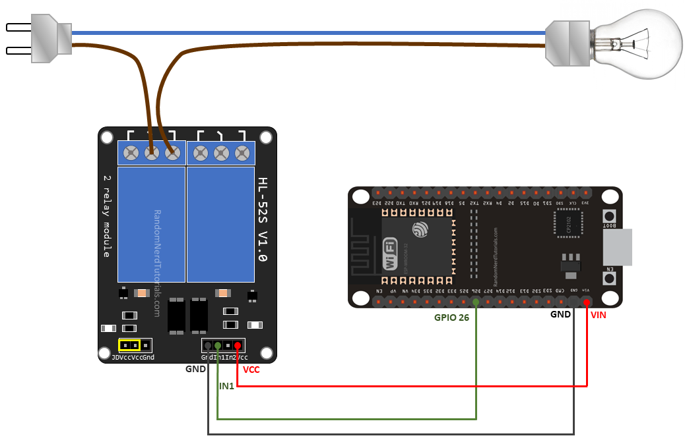
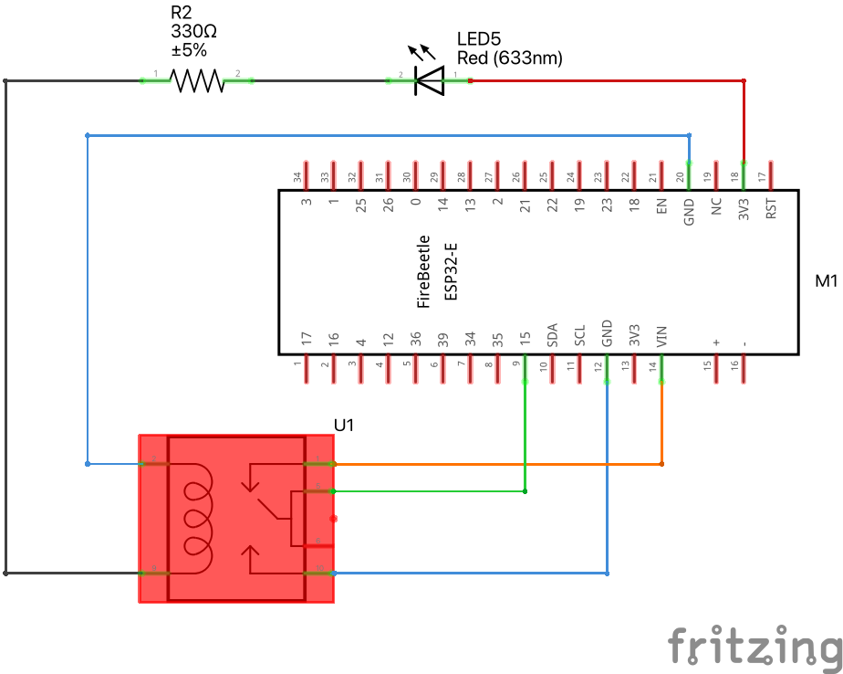
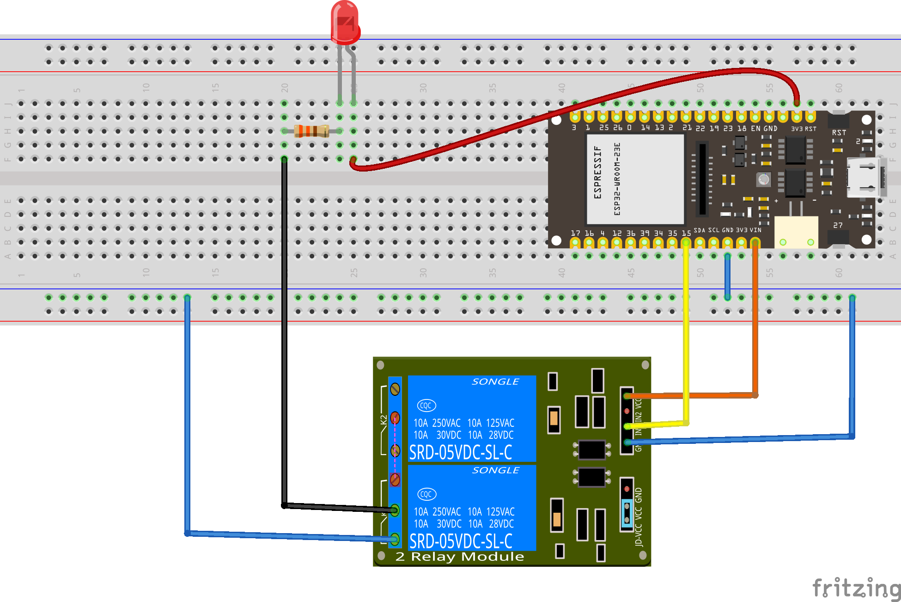

11 Control
11.0.1 Not-so-good LED dimmer
As we saw last time, we can use a potentiometer to control the brightness of an LED or another output device. Add this potentiometer in series in the circuit you have just built, turn the knob and see what happens.
see diagram

see wiring scheme
11.1 PWM with ESP32
Pulse-width modulation (PWM) is a method of controlling the average power delivered by an electrical signal. The average value of voltage (and current) fed to the load is controlled by switching the supply between 0 and 100% at a rate faster than it takes the load to change significantly. PWM is a technique for getting analog results with digital means. Digital control is used to create a square wave, a signal switched between on and off. This on-off pattern can simulate voltages in between the full Vcc of the board and off by changing the portion of time the signal spends on versus the time that the signal spends off. PWM is used in many applications such as controlling motor speed, heat output of heaters and variable speed fan controllers.

Use the following code to activate LED pin with PWM.
Download code/*
Rui Santos & Sara Santos - Random Nerd Tutorials
Complete project details at https://RandomNerdTutorials.com/esp32-pwm-arduino-ide/
Permission is hereby granted, free of charge, to any person obtaining a copy of this software and associated documentation files.
The above copyright notice and this permission notice shall be included in all copies or substantial portions of the Software.
*/
// the number of the LED pin
const int ledPin = D9; // 16 corresponds to GPIO 16
void setup() {
// set the LED as an output
pinMode(ledPin, OUTPUT);
}
void loop(){
// increase the LED brightness
for(int dutyCycle = 0; dutyCycle <= 255; dutyCycle++){
// changing the LED brightness with PWM
analogWrite(ledPin, dutyCycle);
delay(15);
}
// decrease the LED brightness
for(int dutyCycle = 255; dutyCycle >= 0; dutyCycle--){
// changing the LED brightness with PWM
analogWrite(ledPin, dutyCycle);
delay(15);
}
}
If for some reason you are working with an older version of ESP32 board manager (2.0.17 or lower), then use the code below. If you have no idea what I’m talking about, just ignore this.
// the number of the LED pin
const int ledPin = D9;
// setting PWM properties
const int freq = 5000;
const int ledChannel = 0;
const int resolution = 8;
void setup(){
// configure LED PWM functionalitites
ledcSetup(ledChannel, freq, resolution);
// attach the channel to the GPIO to be controlled
ledcAttachPin(ledPin, ledChannel);
}
void loop(){
// increase the LED brightness
for(int dutyCycle = 0; dutyCycle <= 255; dutyCycle++){
// changing the LED brightness with PWM
ledcWrite(ledChannel, dutyCycle);
delay(15);
}
// decrease the LED brightness
for(int dutyCycle = 255; dutyCycle >= 0; dutyCycle--){
// changing the LED brightness with PWM
ledcWrite(ledChannel, dutyCycle);
delay(15);
}
}11.2 Relay

A relay is an electromagnetic switch that opens and closes circuits electromechanically or electronically. A relatively small electric current that can turn on or off a much larger electric current operates a relay.
The right side in the image above has a set of four pins and a set of three pins. The top set consists of:
VCCshould be connected to the ESP32 VCC (5 volts)GNDconnects to the ESP32 GND.IN1andIN2are input pins, used to control the bottom and top relays, respectively, and should be connected to a GPIO pin in the ESP32.
The terminals on the left are connected to the load, the equipment that consumes power. The signal you send to the IN pins determines whether the relay is active or not. The relay is triggered when the input goes below about 2V. This means that you’ll have the following scenarios:
- Normally Closed (NC) configuration:
- HIGH signal – current is flowing
- LOW signal – current is not flowing
- Normally Open (NO) configuration:
- HIGH signal – current is not flowing
- LOW signal – current is flowing
Whether you use the NC or NO configuration, you should always connect one of them to the COM (common) terminal.
You should use a normally closed configuration when the current should be flowing most of the time, and you only want to stop it occasionally.
Use a normally open configuration when you want the current to flow occasionally (for example, to turn on a lamp occasionally).

The other set of three pins (on the left in the figure above) are GND, VCC, and JD-VCC. The JD-VCC pin powers the electromagnet of the relay. Notice that the module has a jumper cap connecting the VCC and JD-VCC pins; the one shown here is yellow, but yours may be a different color.
With the jumper cap on, the VCC and JD-VCC pins are connected. That means the relay electromagnet is directly powered from the ESP32 power pin, so the relay module and the ESP32 circuits are not physically isolated from each other.
Without the jumper cap, you need to provide an independent power source to power up the relay’s electromagnet through the JD-VCC pin. That configuration physically isolates the relays from the ESP32 with the module’s built-in optocoupler, which prevents damage to the ESP32 in case of electrical spikes.

The figure above shows in a very simple way that the relay behaves like a switch with respect to the top circuit.
Let’s make an LED blink, but now using a relay. The code below is the same you used to make the LED blink, when it got its energy from pin A4. This time, we will use A4 to signal the relay to open or close the circuit.
int LED_pin = A4;
// the setup function runs once when you press reset or power the board
void setup() {
// initialize digital pin LED_pin as an output.
pinMode(LED_pin, OUTPUT);
}
// the loop function runs over and over again forever
void loop() {
digitalWrite(LED_pin, HIGH); // turn the LED on (HIGH is the voltage level)
delay(3000); // wait for a second
digitalWrite(LED_pin, LOW); // turn the LED off by making the voltage LOW
delay(1000); // wait for a second
}see diagram
see wiring scheme
11.3 SHT31 Sensor
The SHT31 is a high-precision temperature and humidity sensor that can be used in a wide range of applications. It measures temperature and humidity using a capacitive humidity sensor and a band-gap temperature sensor. It has a wide measurement range of -40°C to 125°C for temperature and 0-100% for relative humidity. The SHT31 is a digital sensor, which means it communicates with the microcontroller over a digital interface. See more details on the Adafruit’s github page for the SHT31 and full specs on the SHT31 datasheet.
11.3.1 Libraries
To use the SHT31 sensor with an ESP32 microcontroller, we will need to use the Adafruit_SHT31 library. This library is specifically designed to work with the SHT31 sensor and makes it easy to read temperature and humidity values from the sensor.
To install the library, follow these steps:
- Open the Arduino IDE
- Go to Sketch > Include Library > Manage Libraries
- Search for “Adafruit_SHT31” and click the Install button
- Wait for the library to install
11.3.2 Wiring
To connect the SHT31 sensor to the ESP32 microcontroller, we will need to use four wires: VCC, GND, SDA, and SCL. Here is a table that shows how to connect the wires:
| SHT31 Pin | ESP32 Pin |
|---|---|
| VCC | 3V3 |
| GND | GND |
| SDA | GPIO21 |
| SCL | GPIO22 |
Note: The ESP32’s 3V3 pin provides 3.3 volts of power, which is the correct voltage for the SHT31 sensor. Do not use the 5V pin, as it will damage the sensor.
11.3.3 Code
Here is the code for reading temperature and humidity values from the SHT31 sensor.
Download code/*
* This program is a modification of
* http://www.esp32learning.com/code/esp32-and-sht31-sensor-example.php
*/
#include <Arduino.h> // Include the Arduino library
#include <Wire.h> // Include the Wire library for I2C communication
#include "Adafruit_SHT31.h" // Include the SHT31 library from Adafruit
Adafruit_SHT31 sht31 = Adafruit_SHT31(); // Create an instance of the SHT31 object
void setup() {
Serial.begin(115200); // Initialize the serial communication with a baud rate of 112500
if (! sht31.begin(0x44)) { // Check if SHT31 is connected and start it with address 0x44
// Print an error message if SHT31 is not found
Serial.println("Couldn't find SHT31");
while (1) delay(1); // Wait indefinitely
}
}
void loop() {
// Read temperature from SHT31 and assign it to "temperature"
float temperature = sht31.readTemperature();
// Read relative humidity from SHT31 and assign it to "humidity"
float humidity = sht31.readHumidity();
if (! isnan(temperature)) { // Check if t is not NaN (not a number)
Serial.print("temp_deg_C:"); // Print temperature label
Serial.print(temperature); // Print temperature value
Serial.print("\t"); // Write a tab space
}
else {
// Print an error message if temperature reading fails
Serial.println("Failed to read temperature");
}
if (! isnan(humidity)) { // Check if h is not NaN (not a number)
Serial.print("rel_hum_%:"); // Print humidity label
Serial.print(humidity); // Print humidity value
}
else {
// Print an error message if humidity reading fails
Serial.println("Failed to read humidity");
}
Serial.println(); // Break line
delay(1000); // Wait 1 second
}11.4 Challenges
11.4.1 High temperature activates fan
You will receive a low-voltage fan. Build a control system that turns the fan on if temperature goes above a given threshold, e.g. 30 °C.
11.4.2 Traffic lights
Using red, orange and green LEDs, build a traffic light system that responds to temperature:
- red turns on if \(T>30\) °C
- orange turns on if \(27<T<30\) °C
- green turns on if \(T<27\) °C
11.4.3 Bonus
Build an PMW-based control system where the duty cycle tempends on temperature.
11.5 Extra codes and examples
11.5.1 Serial read and blink
Download code// Define the built-in LED pin
#define LED_PIN LED_BUILTIN // Most ESP32 boards use GPIO 2 for the built-in LED
void setup() {
// Initialize serial communication at 115200 baud
Serial.begin(115200);
// Wait for the serial monitor to connect
while (!Serial) {
; // Wait for serial port to connect. Needed for native USB port only
}
// Set the LED pin as an output
pinMode(LED_PIN, OUTPUT);
// Print instructions
Serial.println("Enter the number of times you want the LED to blink:");
}
void loop() {
// Check if data is available to read
if (Serial.available() > 0) {
// Read the integer from the serial monitor
int blinkCount = Serial.parseInt();
// Check if the parsed integer is greater than 0
if (blinkCount > 0) {
// Print the received number
Serial.print("Blinking LED ");
Serial.print(blinkCount);
Serial.println(" times");
// Blink the LED the specified number of times
for (int i = 0; i < blinkCount; i++) {
digitalWrite(LED_PIN, HIGH); // Turn on the LED
delay(500); // Wait for 500 milliseconds
digitalWrite(LED_PIN, LOW); // Turn off the LED
delay(500); // Wait for 500 milliseconds
}
// Print done message
Serial.println("Done blinking");
}
}
}